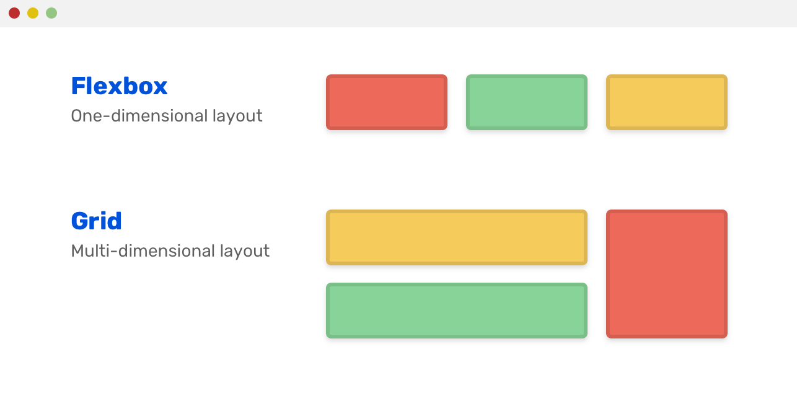
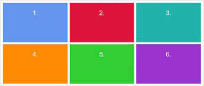
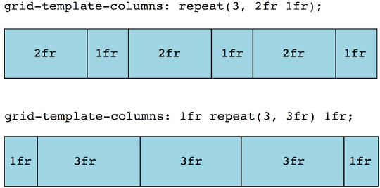
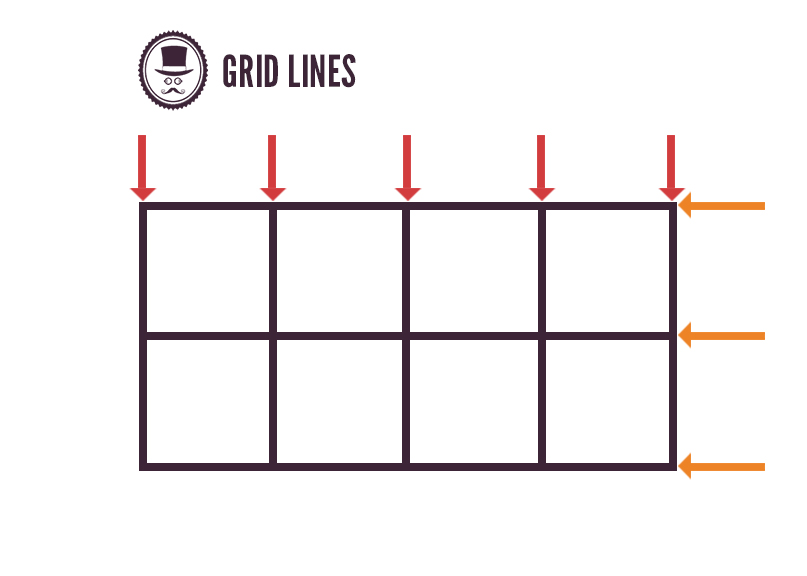
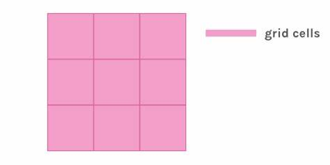

O que é Grid Layout?
a) Ferramenta criada com o intuito de facilitar o processo de criação do layout de uma página em duas dimensões, possibilitando organizar os itens da página com o uso de linhas e colunas, diferentemente do flexbox, como demonstra a imagem.
Cite e dê exemplos das propriedades do Grid Container:
display: grid: Informa o tipo de display que a página terá;
grid-template-columns: Define quantas colunas o grid terá e o quanto de espaço elas ocuparão na tela;
grid-template-rows: Define quantas linhas o grid terá e o quanto de espaço elas ocuparão;
grid-column-start: Informa onde determinado elemento irá começar, levando em consideração as boardas das colunas; grid-column-end: Informa onde determinado elemento irá terminar, levando em consideração as bordas das colunas;grid-row-start: Informa onde determinado elemento irá terminar, levando em consideração as bordas das linhas;
grid-area: Determina uma área no grid, levando em consideração os valores inseridos na ordem: row-start> column-start>row-end>column-end.
grid-gap: Adiciona um espaço entre as linhas e depois nas colunas, de acordo com o valor determinado.
Cite e dê exemplos das propriedades do Grid Item:
justify-items: start: Alinha os items no inicio da célula;
justify-items: end: Alinha os itens no fim da célula;
justify-items: center: Alinha os itens no centro da célula;
justify-items: stretch: Estica os itens em horizontal;
Alinha os itens no inicio da célula verticalmente;
align-items: end: Alinha os itens no fim da célula verticalmente;
align-items: center: Alinha os itens no centro da célula verticalmente;
align-items: stretch: Estica os itens verticalmente até preencher toda a célula;
place-items: Define o alinhamento em uma única declaração, horizontal e verticalmente.
O que é unidade fr?
São fragmentos, você pode determinar a quantidade de colunas que a página terá e quantos fragmentos do espaço total, que cada parte terá.
O que é notação repeat?
Repete as determinações para as próximas colunas, por exemplo: grid-template-columns: repeat(10, 5%) Ele irá criar 10 colunas, fazendo com que cada uma ocupe 5% de espaço.
O que são as linhas do Grid?
Linhas são as divisões adicionadas no eixo X (horizontal).
O que é uma célula no Grid?
Célula é a menor unidade em grid, sendo o meio entre duas linhas de colunas e duas linhas de linhas.
O que são áreas do Grid?
Junção de 1 ou mais células.